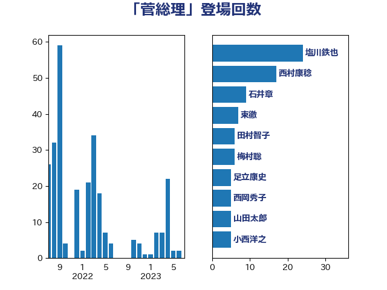

単語「菅総理」

| 塩川鉄也 | 日本共産党 | 24 回 |
| 西村康稔 | 自由民主党 | 17 回 |
| 石井章 | 日本維新の会 | 9 回 |
| 東徹 | 日本維新の会 | 7 回 |
| 田村智子 | 日本共産党 | 6 回 |
| 梅村聡 | 日本維新の会 | 6 回 |
| 足立康史 | 日本維新の会 | 5 回 |
| 西岡秀子 | 国民民主党 | 5 回 |
| 山田太郎 | 自由民主党 | 5 回 |
| 小西洋之 | 立憲民主党 | 5 回 |
| 遠藤敬 | 日本維新の会 | 4 回 |
| 芳賀道也 | 国民民主党 | 4 回 |
| 玄葉光一郎 | 立憲民主党 | 4 回 |
| 柳ヶ瀬裕文 | 日本維新の会 | 4 回 |
| 岡田克也 | 立憲民主党 | 4 回 |
| 奥野総一郎 | 立憲民主党 | 4 回 |
| 谷田川元 | 立憲民主党 | 3 回 |
| 自見はなこ | 自由民主党 | 3 回 |
| 石橋通宏 | 立憲民主党 | 3 回 |
| 田島麻衣子 | 立憲民主党 | 3 回 |
| 甘利明 | 自由民主党 | 3 回 |
| 牧原秀樹 | 自由民主党 | 3 回 |
| 浜口誠 | 国民民主党 | 3 回 |
| 杉尾秀哉 | 立憲民主党 | 3 回 |
| 川田龍平 | 立憲民主党 | 3 回 |
| 山岸一生 | 立憲民主党 | 3 回 |
| 山井和則 | 立憲民主党 | 3 回 |
| 山下雄平 | 自由民主党 | 3 回 |
| 小川淳也 | 立憲民主党 | 3 回 |
| 大串博志 | 立憲民主党 | 3 回 |
| 長妻昭 | 立憲民主党 | 2 回 |
| 野上浩太郎 | 自由民主党 | 2 回 |
| 近藤和也 | 立憲民主党 | 2 回 |
| 蓮舫 | 立憲民主党 | 2 回 |
| 福山哲郎 | 立憲民主党 | 2 回 |
| 石井苗子 | 日本維新の会 | 2 回 |
| 江田憲司 | 立憲民主党 | 2 回 |
| 櫻井周 | 立憲民主党 | 2 回 |
| 村田享子 | 立憲民主党 | 2 回 |
| 杉本和巳 | 日本維新の会 | 2 回 |
| 打越さく良 | 立憲民主党 | 2 回 |
| 山添拓 | 日本共産党 | 2 回 |
| 和田政宗 | 自由民主党 | 2 回 |
| 古川元久 | 国民民主党 | 2 回 |
| 中司宏 | 日本維新の会 | 2 回 |
| 高木啓 | 自由民主党 | 1 回 |
| 高木かおり | 日本維新の会 | 1 回 |
| 馬淵澄夫 | 立憲民主党 | 1 回 |
| 青柳仁士 | 日本維新の会 | 1 回 |
| 阿部知子 | 立憲民主党 | 1 回 |
| 野田佳彦 | 立憲民主党 | 1 回 |
| 道下大樹 | 立憲民主党 | 1 回 |
| 藤川政人 | 自由民主党 | 1 回 |
| 若松謙維 | 公明党 | 1 回 |
| 舩後靖彦 | れいわ新選組 | 1 回 |
| 舟山康江 | 国民民主党 | 1 回 |
| 羽生田俊 | 自由民主党 | 1 回 |
| 緒方林太郎 | 無所属 | 1 回 |
| 笠浩史 | 無所属 | 1 回 |
| 穀田恵二 | 日本共産党 | 1 回 |
| 福島伸享 | 無所属 | 1 回 |
| 福島みずほ | 社会民主党 | 1 回 |
| 神谷宗幣 | 参政党 | 1 回 |
| 玉木雄一郎 | 国民民主党 | 1 回 |
| 猪瀬直樹 | 日本維新の会 | 1 回 |
| 浮島智子 | 公明党 | 1 回 |
| 河野太郎 | 自由民主党 | 1 回 |
| 梅村みずほ | 日本維新の会 | 1 回 |
| 柴田巧 | 日本維新の会 | 1 回 |
| 林芳正 | 自由民主党 | 1 回 |
| 松山政司 | 自由民主党 | 1 回 |
| 末次精一 | 立憲民主党 | 1 回 |
| 朝日健太郎 | 自由民主党 | 1 回 |
| 斎藤嘉隆 | 立憲民主党 | 1 回 |
| 斎藤アレックス | 国民民主党 | 1 回 |
| 御法川信英 | 自由民主党 | 1 回 |
| 後藤祐一 | 立憲民主党 | 1 回 |
| 平林晃 | 公明党 | 1 回 |
| 岬麻紀 | 日本維新の会 | 1 回 |
| 山本太郎 | れいわ新選組 | 1 回 |
| 小沢雅仁 | 立憲民主党 | 1 回 |
| 小山展弘 | 立憲民主党 | 1 回 |
| 小寺裕雄 | 自由民主党 | 1 回 |
| 宮本徹 | 日本共産党 | 1 回 |
| 奥下剛光 | 日本維新の会 | 1 回 |
| 大岡敏孝 | 自由民主党 | 1 回 |
| 塩田博昭 | 公明党 | 1 回 |
| 國重徹 | 公明党 | 1 回 |
| 吉田統彦 | 立憲民主党 | 1 回 |
| 吉川沙織 | 立憲民主党 | 1 回 |
| 古屋範子 | 公明党 | 1 回 |
| 伊藤孝江 | 公明党 | 1 回 |
| 伊佐進一 | 公明党 | 1 回 |
| 仁木博文 | 無所属 | 1 回 |
| 井林辰憲 | 自由民主党 | 1 回 |
| 井上哲士 | 日本共産党 | 1 回 |
| 中川郁子 | 自由民主党 | 1 回 |
| 中島克仁 | 立憲民主党 | 1 回 |
| 上田清司 | 国民民主党 | 1 回 |